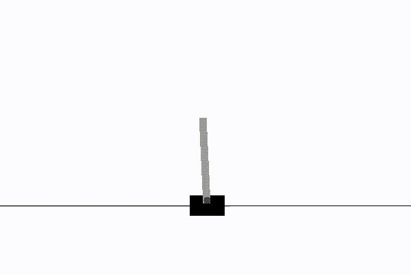

Projects

Exploratory RL Agent
Advanced reinforcement learning research investigating autonomous exploration in complex 3D environments. Features custom transformer architectures with attention mechanisms and rigorous comparative analysis across multiple metrics.
PyTorch
Reinforcement Learning
Deep Learning
Transformers

DQN from Scratch
Complete Deep Q-Network reinforcement learning algorithm built from scratch in pure C with no external dependencies. Includes CartPole environment, neural networks, matrix operations, and visualisation capabilities.
C
Neural Networks
Reinforcement Learning

Minecraft Diffusion Model
Complete LoRA fine-tuning system for Stable Diffusion 1.5, trained to generate images in a distinctive Minecraft visual style. Includes custom dataset creation and inference tools for styled image generation from text prompts.
Generative AI
LoRA Fine-tuning
PyTorch
Stable Diffusion